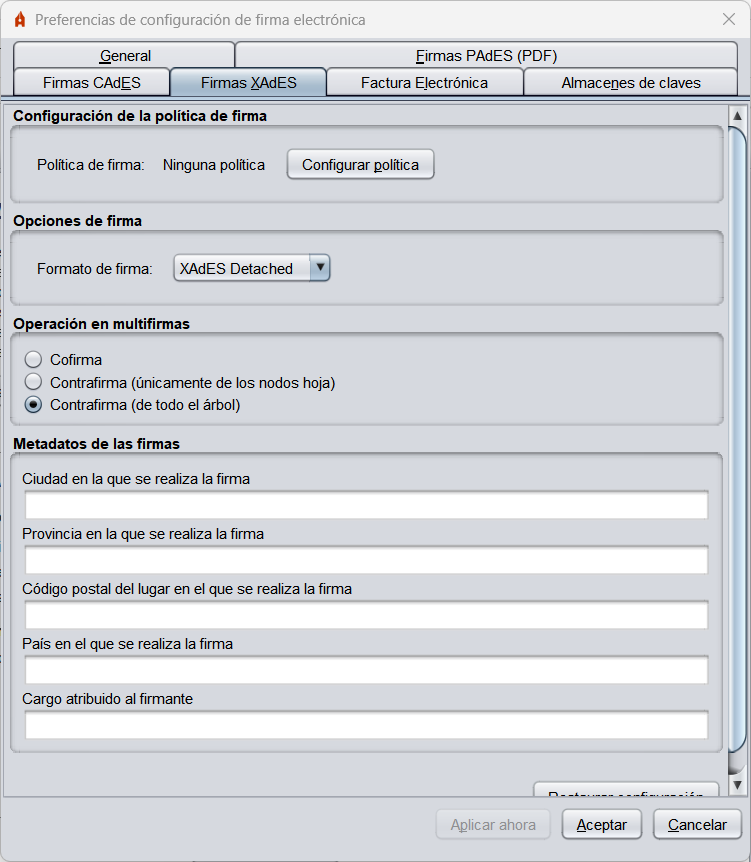
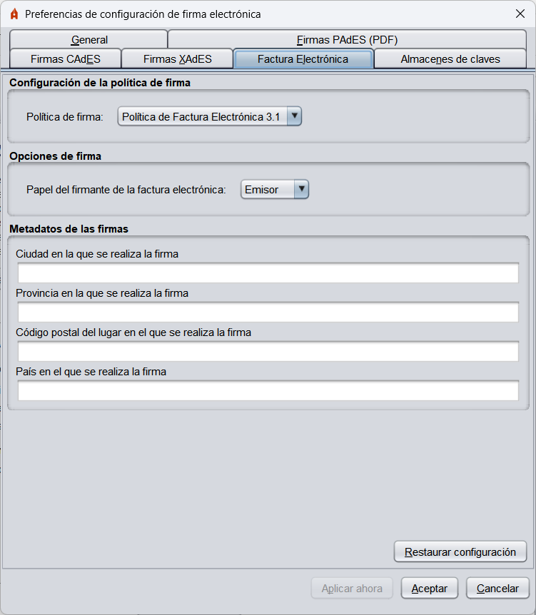

Menú Preferencias
Para configurar las firmas generadas por la herramienta, acceda al menú de configuración a través de la
opción "Opciones" -> "Preferencias" en la barra de menús de la aplicación. Desde este menú
puede configurar el comportamiento general de la aplicación y las firmas generadas para cada tipo de formato.
Si pulsa en el botón "Cancelar" desde cualquier de las pestañas del menú, se cerrará este ignorando
cualquier cambio realizado; si se pulsa el botón "Aceptar" se cerrará el menú dejando configuradas
las opciones definidas en el menú y si se pulsa el botón "Aplicar ahora", se aplicarán los cambios
realizados sin cerrar el menú.
Menú "General"

- Opciones generales:
- Importar configuración general de la aplicación: Opción para importar un fichero de la configuración proporcionado por un administrador.
- Restaurar configuración general de la aplicación: Opción para restaurar la configuración por defecto de la aplicación.
- No pedir confirmación al cerrar la aplicación: Permite salir de la aplicación sin confirmación del usuario.
- No mostrar la pantalla inicial de DNIe y trabajar siempre con cualquier certificado: Opción para omitir la pantalla inicial de detección de DNIe y
permitir al usuario seleccionar el certificado de firma de entre los disponibles en el almacén del sistema.
- Buscar actualizaciones al inicio: Permite configurar si se deben búscar si hay actualizaciones disponibles al iniciar la aplicacion.
- Enviar estadísticas de uso de forma anónima para ayudar a mejorar la aplicación: Permite configurar si se desea permitir el envío de estadísticas de uso.
- Opciones de firma:
- Algoritmo de firma: Algoritmo de firma por defecto que utiliza la aplicación para generar las firmas electrónicas.
- Formatos de firma: Configura qué formato de firma debe aplicarse cuando se proporciona determinado tipo de documento. Al pulsar el botón
"Configurar formatos" se muestra un diúlogo con Los tipos de documento para los que se puede configurar un formato de firma específico:
- Documentos PDF
- Documentos OOXML de Microsoft Office
- Facturas electrónicas
- Ficheros XML genéricos
- Ficheros ODF de LibreOffice u OpenOffice
- Resto de ficheros
Cualquiera de estos tipos de fichero pueden firmarse con los formatos CAdES y XAdES (acordes a la
configuración establecida en las pestañas correspondientes) y algunos de ellos pueden ser
firmados en formatos específicos.
El tipo de documento "Resto de ficheros" hace referencia a cualquier documento que no
esté en cualquiera de las categorías anteriores.
ADVERTENCIA: No se recomienda que se modifique que las facturas electrónicas se
firmen en un formato distinto al de factura electrónica.
- Firma masiva:
- Sobreescribir ficheros en el directorio de salida: Opción para configurar si se desea
que, al generar la estructura de directorios de firmas resultante de un proceso de firma masiva, y en caso
de encontrar un fichero con el mismo nombre con el que se va a guardar una firma, se sobreescriba el
fichero preexistente por el nuevo fichero de firma o se guarde la firma utilizando un nuevo nombre.
- Configuración de red:
- Configurar proxy: Opcióo para configurar el proxy para todas las conexiones de red de
AutoFirma.
Menú "Firmas PAdES (PDF)"

- Política de firma: Permite declarar la política de firma que se sigue en las firmas PAdES;
- Ninguna política: La firmas de PDF generadas no declararán política de firma.
- Política de firma de la AGE 1.9: Se declara la política de firma de la AGE v1.9.
- Política a medida: Permite configurar manualmente cada una de las propiedades de la política.
- Identificador de la política.
- Huella digital del identificador de la política.
- Algoritmo de huella digital del identificador de la política.
- Calificador de la política
- Metadatos de las firmas PAdES:
- Razón por la que se firma el documento: Descripción breve del motivo de la firma.
- Ciudad en la que se realiza la firma: Ciudad en la que se localiza el firmante en el momento de la firma.
- Contacto del firmante: Dirección de correo electrónico.
- Formato básico de firma: Permite configurar el formato básico de las firmas PAdES:
- PAdES Básico: Es el formato de firma PAdES generado por Adobe Acrobat y el utilizado por defecto por el Cliente @firma.
- PAdES-BES: Es el formato que más se ajusta al estándar PAdES, pero Adobe Reader/Acrobat no valida correctamente las multifirmas generadas a partir de él.
- Firma visible:
- Crear firmas visibles en el PDF: Al habilitar esta opción y firmar un documento en formato PAdES, se le
presentará al usuario una ventana para la selección del área del PDF en el que se agregará
la firma visible. Consulte el apartado Firmas visibles PDF para mayor detalle.
Menú "Firmas CAdES (binarias)"

- Política de firma: Permite declarar la política de firma que se sigue en las firmas CAdES:
- Ninguna política: La firmas generadas no declararán política de firma.
- Política de firma de la AGE 1.9: Se declara la política de firma de la AGE v1.9
- Política a medida: Permite configurar manualmente cada una de las propiedades de la política.
- Identificador de la política.
- Huella digital del identificador de la política.
- Algoritmo de huella digital del identificador de la política.
- Calificador de la política
- Opciones de firma:
- Incluir una copia de los datos firmados en la propia firma: Configura si la firma electrónica debe almacenar internamente los datos firmados.
Menú "Firmas XAdES (XML)"

- Política de firma: Permite declarar la política de firma que se sigue en las firmas XAdES:
- Ninguna política: La firmas de XML generadas no declararán política de firma.
- Política de firma de la AGE 1.9: Se declara la política de firma de la AGE v1.9
- Política a medida: Permite configurar manualmente cada una de las propiedades de la política.
- Identificador de la política.
- Huella digital del identificador de la política.
- Algoritmo de huella digital del identificador de la política.
- Calificador de la política
- Metadatos de las firmas XAdES:
- Ciudad en la que se realiza la firma: Ciudad en la que se localiza el firmante en el momento de la firma.
- Provincia en la que se realiza la firma: Provincia en la que se localiza el firmante en el momento de la firma.
- Código postal en la que se realiza la firma: Código postal en la que se localiza el firmante en el momento de la firma.
- País en el que se realiza la firma: País la que se localiza el firmante en el momento de la firma.
- Cargo del firmante: Cargo de quien realiza la firma.
- Formato de las firmas XAdES:
- XAdES Enveloping: Se configura el modo enveloping (la firma envuelve a los datos firmados).
- XAdES Detached: Se configura el modo detached (firma y datos en una super-estructura XML).
- XAdES Enveloped: Se configura el modo enveloped (la firma se inserta dentro de los datos XML).
ADVERTENCIA: La política de firma de la AGE, sólo permite la realización de firmas
en formatos Enveloped e Internally Detached (aquí referida como Detached). Así pues, sólo se podrán configurar
estos formatos de firma cuando se declare la política de firma de la AGE.
Menú "Factura Electrónica"

- Política de firma: Permite declarar la versión de la política de firma de Factura electrónica que debe utilizarse.
- Metadatos de las facturas electrónicas:
- Ciudad en la que se realiza la firma: Ciudad en la que se localiza el firmante en el momento de la firma.
- Provincia en la que se realiza la firma: Provincia en la que se localiza el firmante en el momento de la firma.
- Código postal en la que se realiza la firma: Código postal en la que se localiza el firmante en el momento de la firma.
- País en el que se realiza la firma: País la que se localiza el firmante en el momento de la firma.
- Opciones de firma:
- Papel del firmante de la factura electrónica: Permite configurar el rol que desempeña el firmante en el ciclo de vida de la factura.